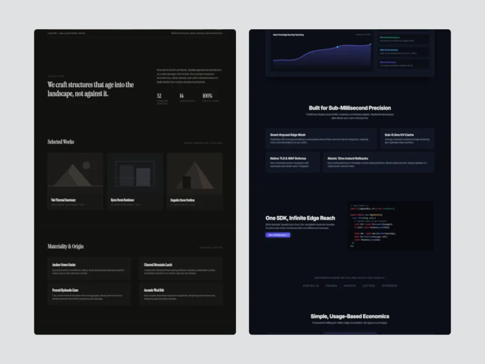
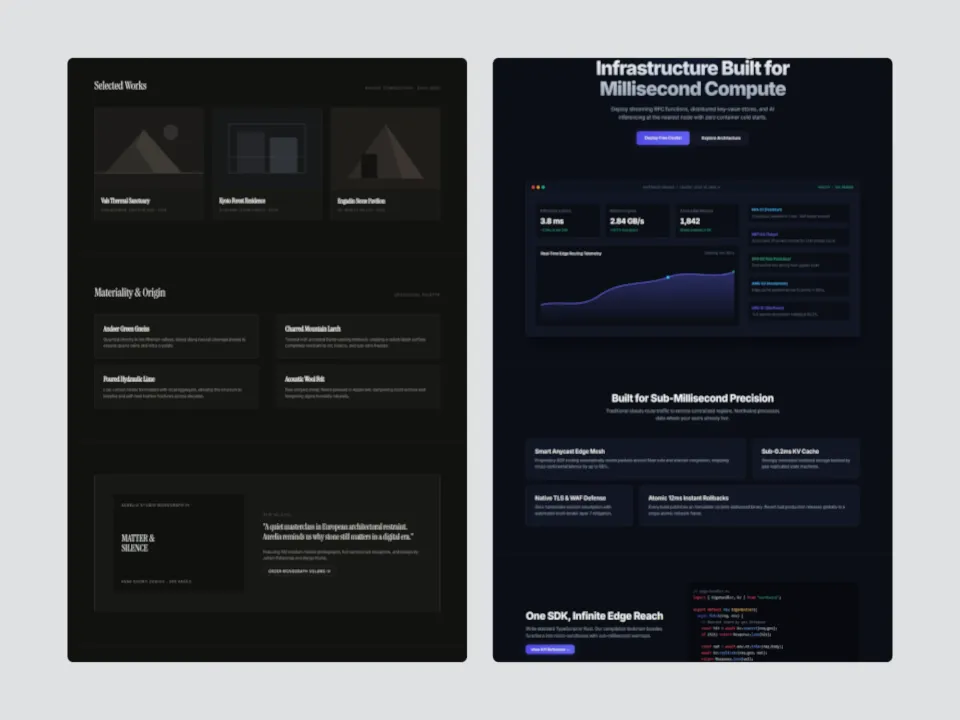
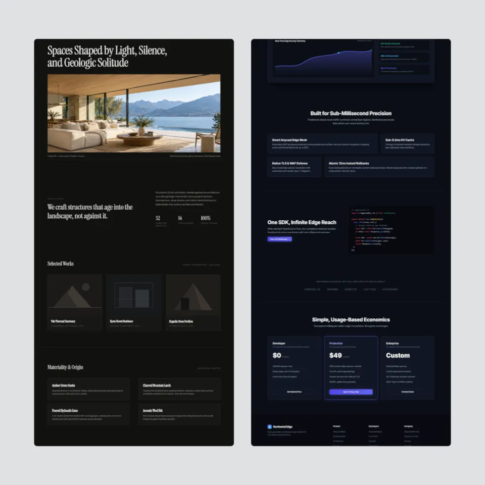
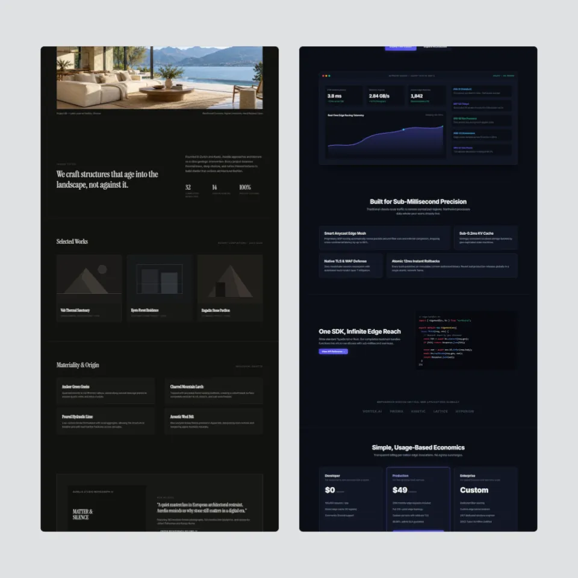
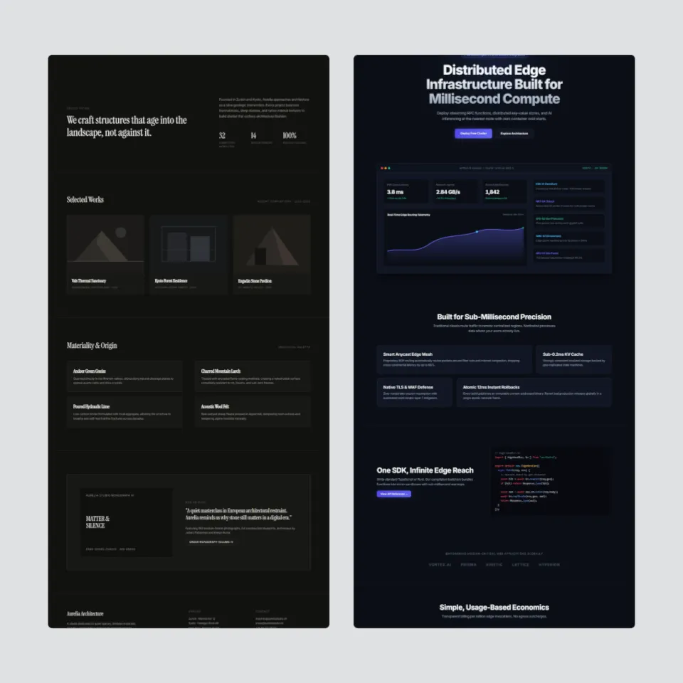
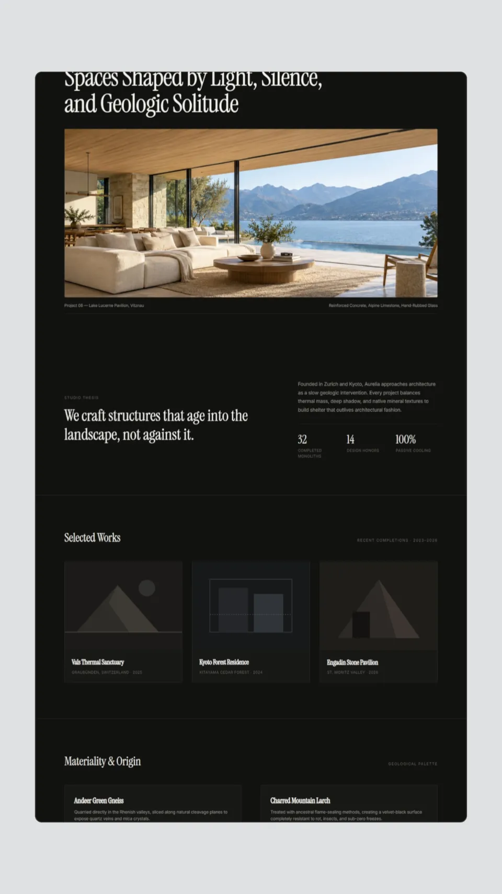
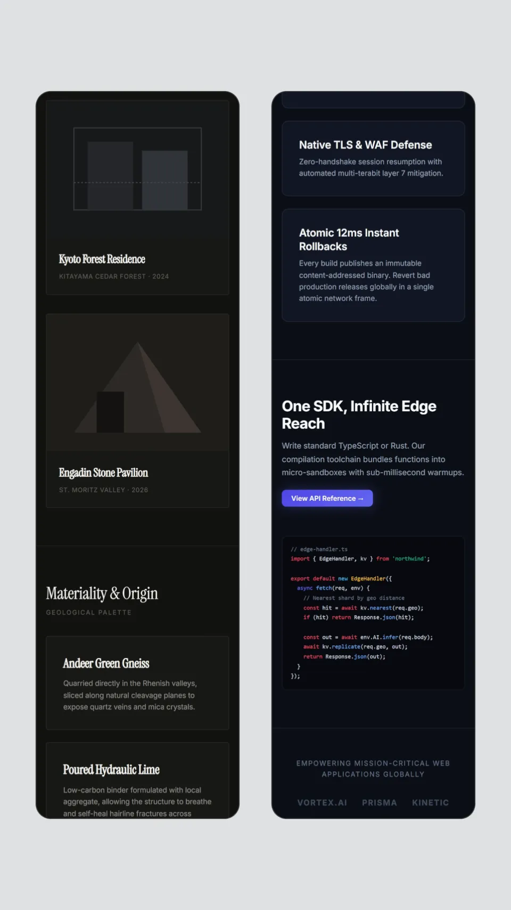
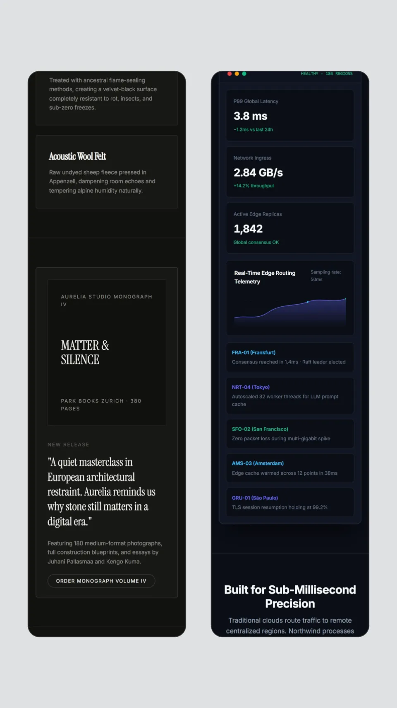

Template contact sheet
2 templates × 5 aspects × 3 times (15%, 50%, 85% of each template's length), 960 px wide. Click a frame for full size.
Desktop Page Columns desktop-page-columns
16:9 · 15% · 1.80 s
16:9 · 50% · 6.00 s
16:9 · 85% · 10.20 s
4:3 · 15% · 1.80 s

4:3 · 50% · 6.00 s

4:3 · 85% · 10.20 s

1:1 · 15% · 1.80 s

1:1 · 50% · 6.00 s

1:1 · 85% · 10.20 s
4:5 · 15% · 1.80 s
4:5 · 50% · 6.00 s
4:5 · 85% · 10.20 s

9:16 · 15% · 1.80 s
9:16 · 50% · 6.00 s
9:16 · 85% · 10.20 s
Mobile Page Columns mobile-page-columns
16:9 · 15% · 2.02 s
16:9 · 50% · 6.75 s
16:9 · 85% · 11.47 s
4:3 · 15% · 1.95 s
4:3 · 50% · 6.50 s
4:3 · 85% · 11.05 s
1:1 · 15% · 1.80 s
1:1 · 50% · 6.00 s
1:1 · 85% · 10.20 s
4:5 · 15% · 1.80 s
4:5 · 50% · 6.00 s
4:5 · 85% · 10.20 s
9:16 · 15% · 1.80 s

9:16 · 50% · 6.00 s

9:16 · 85% · 10.20 s